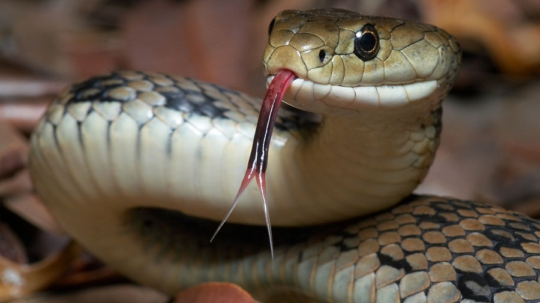

Las serpientes son un tipo de reptiles que se caracterizan principalmente por la carencia de patas. Su anatomía, caracterizada por un cuerpo alargado, está preparada para permitir un desplazamiento sin necesidad de extremidades: pueden moverse cómodamente tanto por tierra como por agua. Tienen la piel recubierta de escamas, un esqueleto que les proporciona mucha flexibilidad y una lengua bífida. Algunas especies matan a sus presas por constricción –por ejemplo las boas–, pero otras lo hacen mediante el veneno que inoculan con los dientes cuando muerden a sus víctimas. Todos los miembros de esta especie son animales carnívoros..
